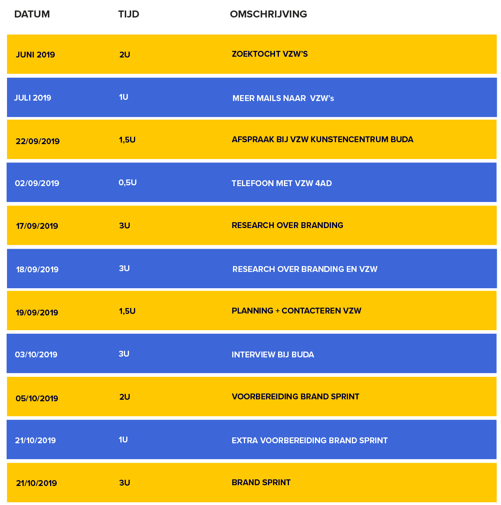

lay-outrichtlijnen drukwerk
Voor het opmaken van drukwerk, is het aangeraden om bij onderstaande onderverdeling van typografie te blijven. Via de downloadlink is het mogelijk om een InDesign-file met paragraafstijlen te downloaden.
Voor het maken van een document op A5 (zoals de folder), hou je best de volgende richtlijnen in acht:
Bladspiegel: 148 x 210mm
Zetspiegel: 132 x 186mm
Kolommen: 12
Kolomwit: 2mm
Kleuren fonts: Davy's Gray (#000033), Royal Blue (#3D67D9) en in een enkel geval de secundaire kleur die bij het onderdeel van de branding past.

lay-outrichtlijnen digitaal
Voor online toepassingen is het aangeraden om onderstaande onderverdeling qua typografie te volgen. Deze mag aangepast worden naargelang de grootte van het scherm. Via de downloadknop kan je een XD-bestand downloaden met de karakterstijlen die al gedefinieerd werden voor een webpagina van 1920px en voor mobiel (iPhone 5S).
Voor de programmatie van de website, hebben we de richtlijnen verzameld in een css-bestand. Dit kan je ook hieronder downloaden.

lay-outrichtlijnen tabellen
Voor het opmaken van tabellen, hanteren we een afwisseling van de blauwe en een secundaire kleur (afhankelijk van op welk onderdeel van het kunstencentrum de tabel of lijst van toepassing is).
© 2018 Foto | Jonas Verbeke
In samenwerking met Tiffany Devos en Arteveldehogeschool
Academiejaar 2019-2020